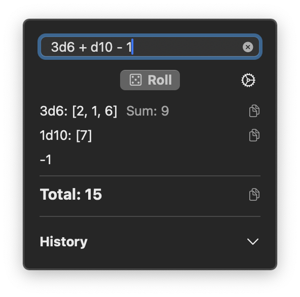
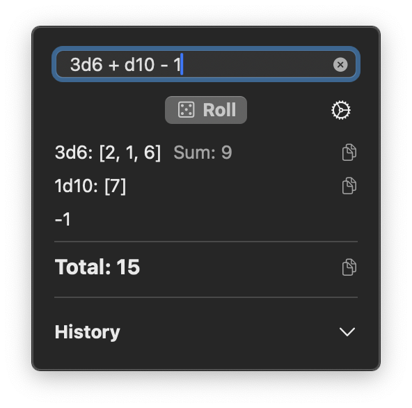

Features
Standard Dice Notation
Roll any combination of dice using standard notation (2d20 + 1, 4d6 - 2, etc.)
Quick Access
Access MacRoller instantly from your menubar. Perfect for quick rolls during gaming.
Roll History
Keep track of previous rolls with optional history. Quickly reuse previous formulas.
Detailed Results
See individual die results, sums for multiple dice, and your total with modifiers.
Copy Results
Easily copy roll results to your clipboard, with optional roll formula included.
Error Checking
Clear error messages help you identify and correct any issues in your notation.